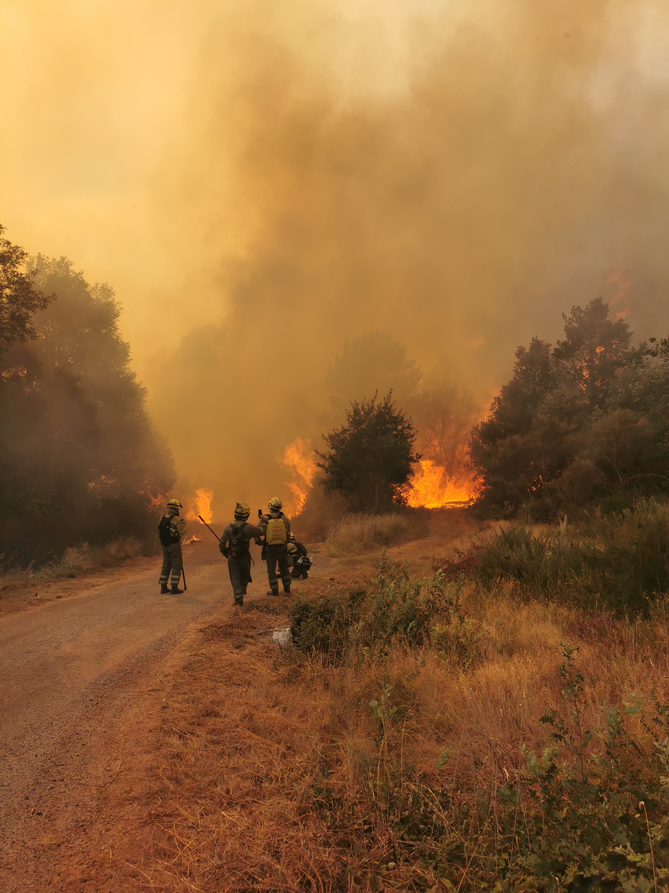
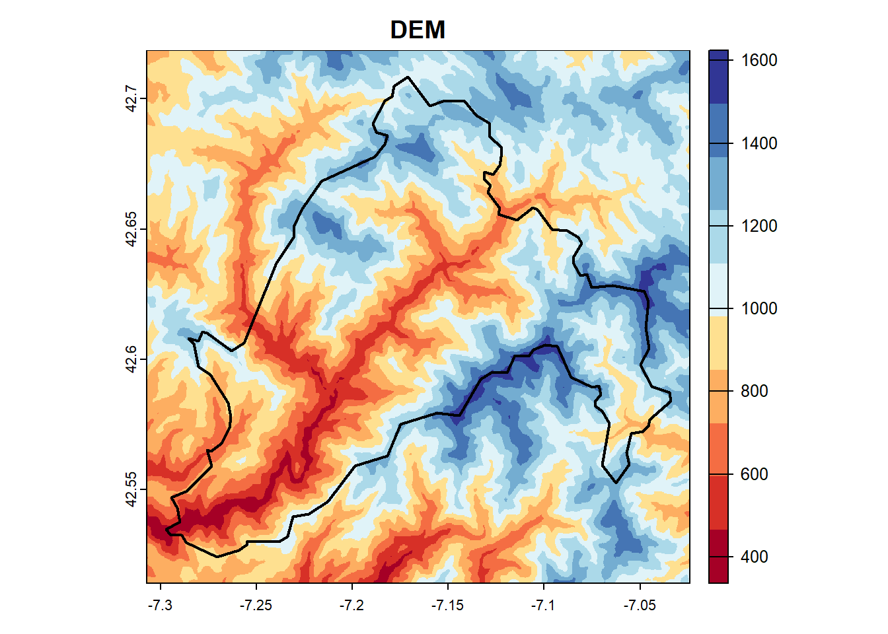
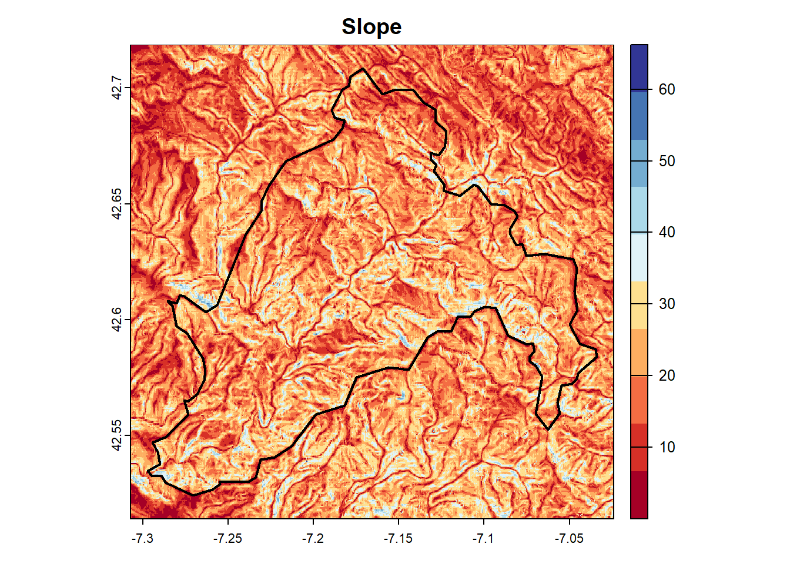

require(pacman)
p_load(sf, here, terra, geodata, tidyverse, ggspatial, mapview, elevatr,
rasterVis, tidyterra, cptcity, RColorBrewer, spatialEco, report,
lubridate, RStoolbox, flextable, leafpop)Analysis of summer 2022 wildfires blast in Folgoso do Courel, Spain
Abstract
Galicia is the northestern region of Spain. Its climate has critical features that make it a particular scenario for wildfires. The very humid conditions of the region combined with the rural Exodus created a continuous forest structure dominated by very flammable species such as Erica spp., Cytisus scoparius, etc. Conversely to what is expected from a humid region, Galicia gathers almost half of the wildfires (in area and number) of Spain. This is explained by the fact that summer is Mediterranean-influenced, and severe droughts can be expected in Galicia, specially in the province of Ourense. The wildfires of summer 2022 will be in the memory of the Galician population, when more than 40,000 ha burned during more than 1 month during July and August. A total of 63 of large forest fires (i.e. greater than 500 ha) were registed in Galicia until the \(31^{st}\) of August. Furthermore, the two greatest wildfires of the history of Galicia since we have registers were recorded. One comprises the municipality of Folgoso do Courel, where about 6,400 hectares burned of which the 89% presented moderate to high levels of severity. The spatio-temporal dynamics showed that the northern area (higher in altitude) was typically healthier and humid, resulting in absence of fires, whereas the southern area with unhealthier and less humid vegetation was devastated.

1 Introduction
During the summer of 2022, the region of Galicia was devastated by wildfires, with over 40,000 hectares burned in just July and August. The fire outbreak began with an intense dry storm on the evening of July \(15^{th}\), which brought with it over 6,000 lightning strikes in less than 4 hours. The same week, temperatures in Ourense reached a record high of 44ºC, with similar heat waves reported throughout the province. These extreme weather conditions created the perfect storm for the spread of devastating wildfires.
The year 2022 was marked by a severe drought, which affected not only the summer months but also late winter and spring, a crucial time for replenishing the trees’ water supply. This shortage of water caused significant stress to the vegetation, which was further exacerbated by the ongoing rural abandonment. With no human intervention, dead biomass accumulated in large quantities, creating dangerous conditions for wildfires. The unusual weather conditions combined with the high amount of fuel available led to an unprecedented number of wildfires, which overwhelmed the firefighting resources and were difficult to contain. The existing firefighting infrastructure was not equipped to handle such a catastrophic situation.
In this study, I studied how the vegetation stress evolved over time. To relate it, a comparison was made of a relatively normal (average precipitation) year as it was 2021 with 954 registered wildfires and only 4,400 ha burned, against a dry year as 2022 with more than 40,000 ha burned in only 2 months (July and August).
The aim of this work was to study the spatio-temporal dynamics using vegetation indices derived from remote sensing images. The specific objectives were: (1) to study spatio-temporal dynamics of vegetation statues using the well-known Enhanced Vegetation Index (EVI); (2) to study the spatio-temporal dynamics of vegetation moisture through the Normalized Difference Water Index (NDWI); (3) to define the burned area and its severity.
2 Materials and Methods
2.1 Packages
2.2 Study area
The selected study area is the subregion of Folgoso de Courel (Galicia) which was severely affected by wildfires.
# Download spanish level 4 boundaries
spain <- gadm(country = 'ESP',
level = 4,
path = here('inputs/'),
resolution = 2)
# Filter study area
aoi <- spain |>
st_as_sf() |>
filter(NAME_4 == 'Folgoso do Courel')In Fig. 1 we can see the location of the study area. Setting on the Esri.WorldImagery map, we can see that the region is very montanious, and mostly covered by forests.
Code
mapview(aoi,
viewer.suppress = mapviewGetOption("viewer.suppress"),
color = 'red',
lwd = 3,
alpha.regions = 0,
label = 'Folgoso do Courel',
legend = FALSE
)We can illustrate this by plotting the slope of the study area. To do so, we can download the DEM with the next chnuk of code, and compute the slope with the terra::terrain() function.
# Download the DEM
dem <- get_elev_raster(
locations = aoi,
z = 14,
clip = "bbox"
) |>
rast()
# Compute the slope
slope <- terrain(dem, v = 'slope')Next, a graphical representation of the DEM and the slope is presented in Fig. 2 and Fig. 3, respectively.
Code
pal <- brewer.pal(n = 10, name = 'RdYlBu')
plot(dem, col = pal, main = 'DEM')
plot(slope, col = pal, main = 'Slope')
